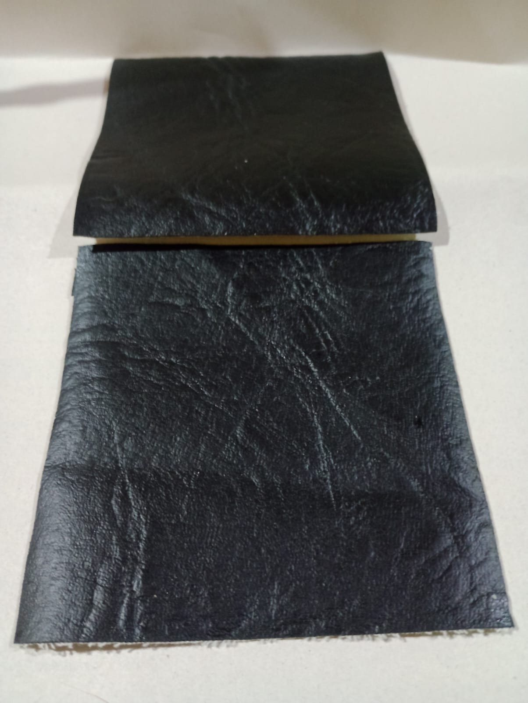
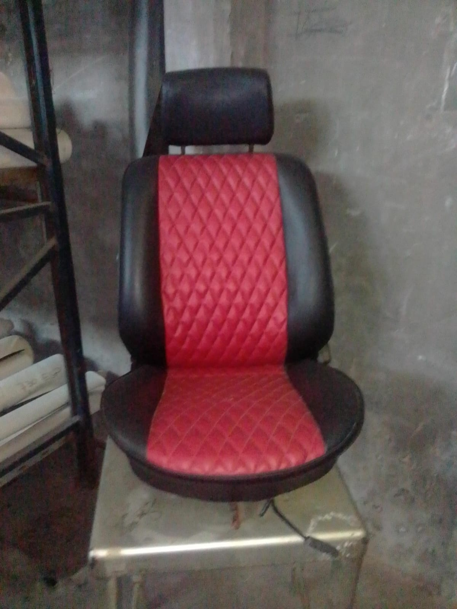
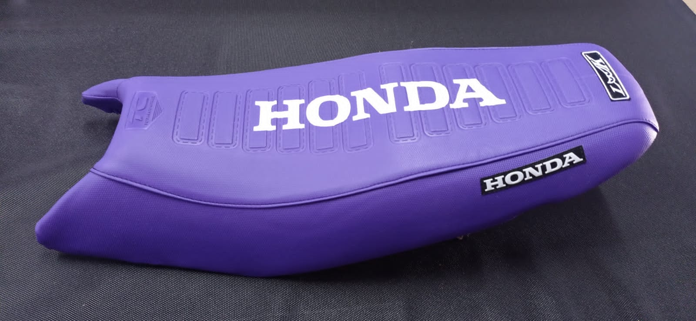

Cuerinas artificiales al por mayor para tapicería, indumentaria, calzado y marroquinería. Muestras a pedido y despacho a todo el país.
Catálogo
Esta es una muestra de ejemplo del catálogo — la vamos a reemplazar por fotos reales de los rollos y terminaciones apenas las tengamos.
¿No encontrás el color o la terminación que buscás? Escribinos y te confirmamos stock y muestras disponibles.
Aplicaciones
Sillones, sillas y respaldos para mueblerías y tapiceros.
Camperas, accesorios y detalles en prendas.
Carteras, cinturones, mochilas y calzado.
Butacas y detalles interiores para autos y motos.
Fotos y video



Visitanos
Si ya nos compraste, nos ayuda muchísimo que dejes tu reseña — es lo que hace que más gente nos encuentre.
Cómo comprar
Pedís por WhatsApp indicando color, ancho de rollo y metraje. Te confirmamos stock, precio mayorista y tiempo de entrega.
Muestras
Podemos enviar muestras físicas antes de una compra grande para que verifiques color y textura.
Envíos
Despachamos a todo el país. Consultá el costo y tiempo según tu localidad.